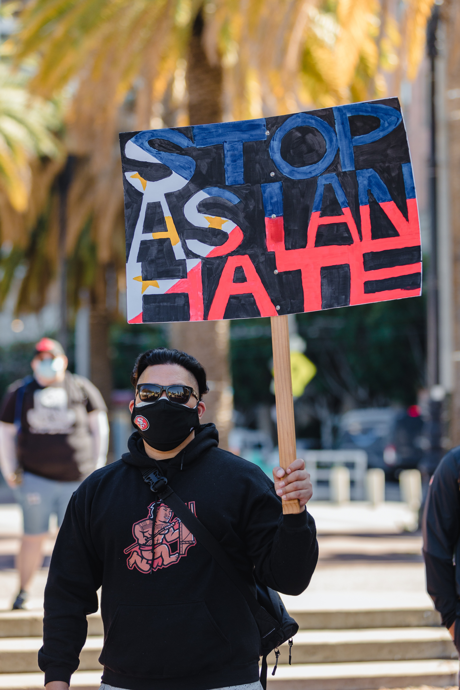

 Shortly after seeing the surge in attacks, the Stop Asian Hate movement was created to respond to incidents of violence against Asian Americans and Pacific Islanders, as well as hold protests and rallies across the United States to speak out against the racial discrimination against Asian Americans.
The Stop AAPI Hate movement launched in March 2020 and collected more than 100 reported hate incidents within the first year, and more than 4,000 reported incidents in less than a year.
Information is from Stop AAPI Hate and NBC News.
Photo on the right is by Jason Leung on Unsplash